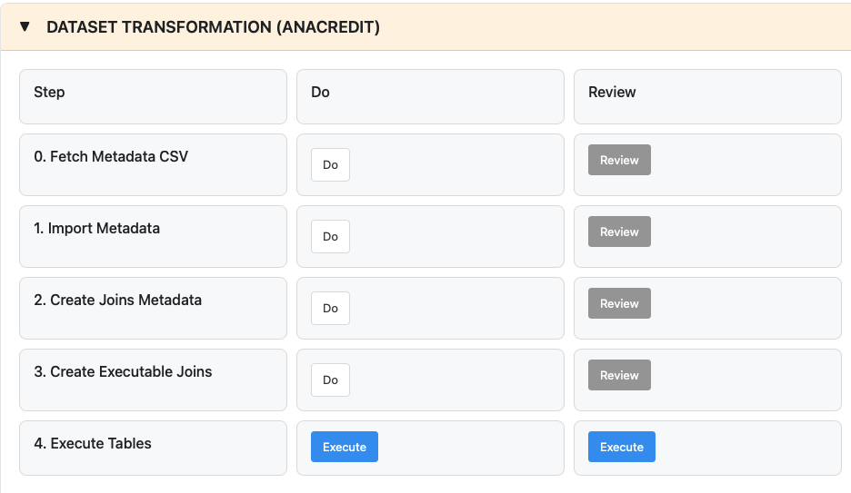

Dataset Transformation Guide
Feature Overview
The Dataset Transformation Process is your comprehensive tool for converting regulatory data models into executable transformations that meet ECB (European Central Bank) analytical credit data requirements. It provides a systematic approach to processing Dataset specifications, from fetching the latest ECB metadata to generating production-ready Python code for regulatory reporting.
Purpose
The Dataset Transformation Process serves as the critical bridge between ECB regulatory specifications and your operational reporting systems by automating the complex task of translating regulatory requirements into working code. The process provides automated metadata management that fetches and processes the latest ECB Dataset specifications automatically, while intelligent join generation capabilities analyze data relationships and create optimized join logic. The system generates production-ready Python code with executable transformations ready for deployment, and throughout the entire process, compliance assurance features maintain alignment with current ECB analytical credit data requirements.
This feature is essential for financial institutions required to submit analytical credit datasets to the ECB, ensuring both regulatory compliance and operational efficiency while minimizing the risk of manual processing errors.
Getting Started
Prerequisites
Before using Dataset Transformation, ensure you have the FreeBIRD Application installed and running on your system. You'll need active internet connectivity for ECB data access, as the workflow fetches specifications directly from ECB repositories. Database connectivity must be established to store imported metadata and generated code. Finally, verify that you have appropriate permissions for data import and code generation operations.
Accessing Dataset Transformation
Once you access the Workflow Dashboard, you'll see the workflow dashboard interface titled "DATASET TRANSFORMATION (ANACREDIT)". This interface provides a clear overview of all workflow steps and their current status.

Dashboard Layout:
The dashboard is organized in a 3-column grid structure that presents workflow information clearly. The Step Column on the left lists all 5 workflow steps in sequential order, numbered from 0 to 4 (Fetch Metadata CSV, Import Metadata, Create Joins Metadata, Create Executable Joins, and Execute Tables). The Do Column in the middle contains action buttons to execute each step, with Steps 0-3 displaying gray "Do" buttons and Step 4 showing a blue "Execute" button to emphasize the final execution phase. The Review Column on the right contains gray "Review" buttons that allow you to view results and access editing tools after executing each step.
How to Use:
To work through the workflow, you'll click the "Do" or "Execute" button in the middle column to run each step, then click the "Review" button in the right column after a step completes to view results, examine statistics, and access embedded editors for refining the generated output. Always progress sequentially, completing each step before moving to the next one, as the dashboard automatically tracks which steps have been completed to help you maintain your place in the workflow. You will follow this 5-step sequential process designed to take you from raw ECB specifications to executable results.
Step-by-Step Guide
5-Step Dataset Workflow
The Dataset workflow consists of five sequential steps that build upon each other, creating a complete transformation pipeline from metadata to executable results.
Step 0: Fetch Metadata CSV
This initial step retrieves the latest Dataset specifications directly from the ECB repository.
Click "Step 0: Fetch Dataset CSV" to begin the download process. The system will connect to the ECB repository and retrieve the current CSV files containing Dataset data model definitions. These files represent the authoritative source for regulatory requirements and include all table structures, field definitions, and relationship specifications. Once downloaded, the files are stored locally in your system, ready for processing in the next step.
Step 1: Import Metadata
This step processes the downloaded CSV files and builds your local Dataset data model.
Click "Step 1: Import Metadata" to start the import process. The system will validate the structure and content of the CSV files, ensuring data integrity before proceeding. It then creates the necessary database structures, including tables, fields, and constraints that mirror the ECB specifications. During this process, all Dataset specifications are imported and organized in your database. Once complete, you'll have a fully structured data model that accurately reflects the ECB requirements and is ready for relationship analysis.
After execution, click "Step 1 Review" to view import statistics including the number of cubes created, cube structures, and variables imported. The review page displays detailed information about all imported Dataset tables and their structures.
If import fails, verify that Step 0 completed successfully and the CSV files exist in the resources/dataset/ directory.
Step 2: Create Joins Metadata
This step analyzes your imported data model and generates the specifications for data joins.
Click "Step 2: Create Joins Metadata" to initiate the analysis. The system examines the relationships between different data elements, identifying foreign key relationships, hierarchical structures, and logical connections within the Dataset model. Based on this analysis, it creates comprehensive metadata that defines how these elements should be connected during data processing. This join metadata serves as the blueprint for the executable code that will be generated in the final step, ensuring that all data transformations maintain referential integrity and comply with ECB specifications.
After execution, click "Step 2 Review" to access a tabbed interface with embedded editors. The Edit Cube Links editor allows you to add, modify, or remove table-to-table relationships, with filtering options by foreign cube or join identifier. The Edit Cube Structure Item Links editor lets you define variable-to-variable joins with built-in validation and domain checking. The Edit Member Links editor provides functionality to map dimension values between tables using searchable dropdowns. Finally, the View Diagram feature offers an interactive network visualization of table relationships. These embedded editors allow you to refine the auto-generated join metadata to match your specific business requirements.
If editors don't load, check your browser JavaScript console and disable ad blockers. Ensure cubes were imported successfully in Step 1.
Step 3: Create Executable Joins
This step transforms your join metadata into production-ready Python code.
Click "Step 3: Create Executable Joins" to begin code generation. The system converts the abstract join specifications from Step 2 into concrete Python scripts that can process actual regulatory data. The generated code is optimized for performance and includes error handling, logging, and validation logic. These Python transformations are ready for integration into your regulatory reporting pipeline, enabling automated processing of source data into ECB-compliant Dataset formats.
After execution, click "Step 3 Review" to access the code management interface. The Deployment Status view shows which files are synced to production and which need deployment. The Individual Code Editor allows you to edit Python files with syntax highlighting, error detection, and AST navigation for files under 300 KB. The Unified Filter Code Editor enables seamless editing of multiple files with auto-save functionality. The Deploy Code feature lets you deploy individual files or all files at once to production.
Generated Python files are stored in results/generatedpythonjoins/ and must be deployed to pybirdai/processsteps/filtercode/ before execution in Step 4.
If Monaco editor doesn't load, check your internet connection and browser JavaScript console. For deployment failures, verify file permissions and disk space.
Step 4: Execute Dataset Tables
After completing Steps 0-3, you're ready to execute your Dataset tables. Step 4 allows you to run the generated transformations, apply dimension filters, and download results.
For detailed instructions on executing Dataset tables, see the Dataset Execution Guide.
Best Practices
Always execute the steps in sequential order from Step 0 through Step 4, as each step depends on the successful completion of the previous one. Complete each step fully before proceeding to the next and verify the results at each stage. Before attempting to fetch data from the ECB, confirm your internet connectivity and check any firewall or proxy settings that might affect external access. During the import process, monitor the validation results carefully to ensure data accuracy and completeness. After join metadata generation, review the created relationships using the embedded editors to confirm that proper connections are established between data elements. After code generation in Step 3, review and deploy the code before executing tables. In Step 4, start with filtered executions to test transformations before running full table processing.
Troubleshooting
Connection and Download Issues
If you're unable to fetch CSV files from the ECB, start by verifying your internet connectivity and ensuring that your firewall settings allow access to ECB repositories. Check whether the ECB repository is currently available by attempting to access it through a web browser. If your organization uses a proxy server, review and update your proxy settings to ensure they're correctly configured for external access.
Import and Processing Errors
When import failures occur, first validate that the CSV files are complete and properly formatted with no corruption during download. Check your database connectivity and confirm that you have the necessary permissions to create tables and import data. Review the import logs carefully for specific error messages that can help identify the root cause. If validation errors appear, they may indicate changes in the ECB specification format that require attention.
Metadata and Code Generation Problems
If join metadata generation produces unexpected or incorrect relationships, verify that the import step completed successfully without errors or warnings. Check for any inconsistencies in the data model that might affect relationship detection. Ensure you're using the latest ECB specifications, as older versions may have different structure or requirements. For code generation problems, confirm that the join metadata was created properly and is accessible. Check your Python environment to ensure all required dependencies are installed and compatible. Review the code generation logs for detailed error information that can guide troubleshooting efforts.
Advanced Usage and Integration
Maintaining ECB Compliance
Staying current with ECB specification updates is critical for maintaining regulatory compliance. The Dataset Transformation Process provides a clear audit trail of when specifications were fetched, what versions were imported, and how transformations were generated. This documentation supports supervisory reviews and internal compliance verification. Regularly schedule Step 0 to check for and retrieve the latest ECB specifications, particularly around known update cycles or regulatory announcements.
System Integration
The Dataset transformation process integrates seamlessly into your broader regulatory reporting workflow. Connect the process to your workflow dashboard for centralized monitoring and control. Link it to core banking systems to access source data for transformation. Integrate with regulatory submission platforms to automate the flow from data transformation to report submission. Incorporate Dataset processing into your data governance framework to ensure proper oversight and control.
Optimization Opportunities
For organizations with high data volumes or frequent processing requirements, consider implementing automated scheduling to regularly fetch ECB data updates without manual intervention. You can extend the generated Python code with institution-specific validation rules that address your unique data quality requirements. Optimize the generated code for your specific environment by adjusting batch sizes, parallel processing options, or memory management based on your infrastructure capabilities and data volumes.
Conclusion
The Dataset Transformation Process provides a complete, automated solution for converting ECB regulatory specifications into operational code and executable results. By following the 5-step sequential workflow, you can efficiently maintain compliance with analytical credit data requirements while minimizing manual effort and reducing processing errors.
Next Steps
Continue your Dataset transformation journey with these complementary guides. Use Edit Links Features to refine the cube links, structure item links, and member links generated in Step 2 of the workflow. Review the Execute Dataset Guide for detailed Step 4 instructions on running table transformations with dimension filters. Explore Code Editing and Publishing to understand the code review, editing, and deployment system available in Step 3. Return to the Workflow Dashboard Guide to compare this workflow with other available options and understand which best fits your regulatory reporting needs.